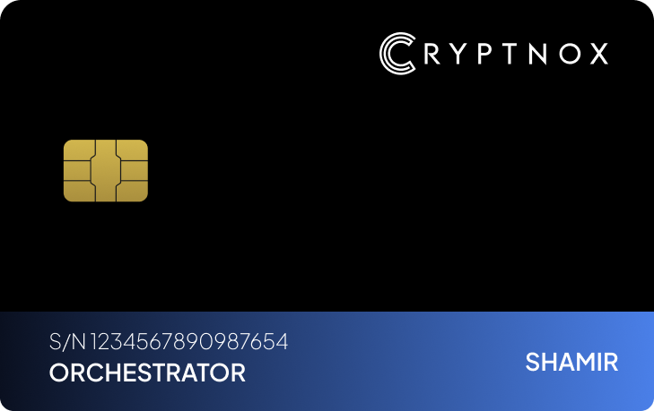
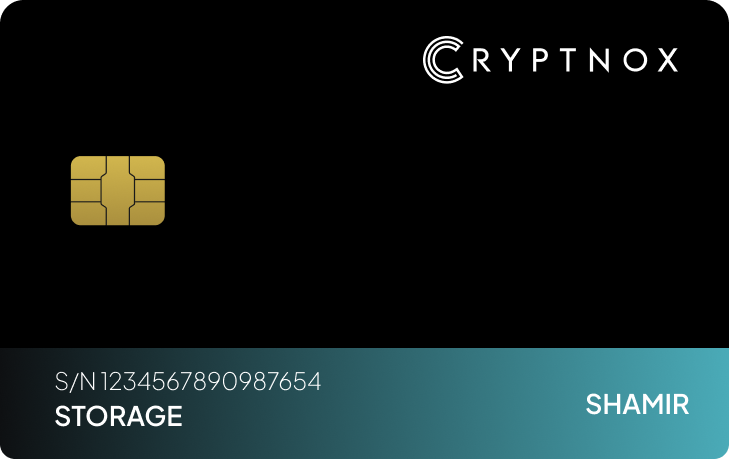
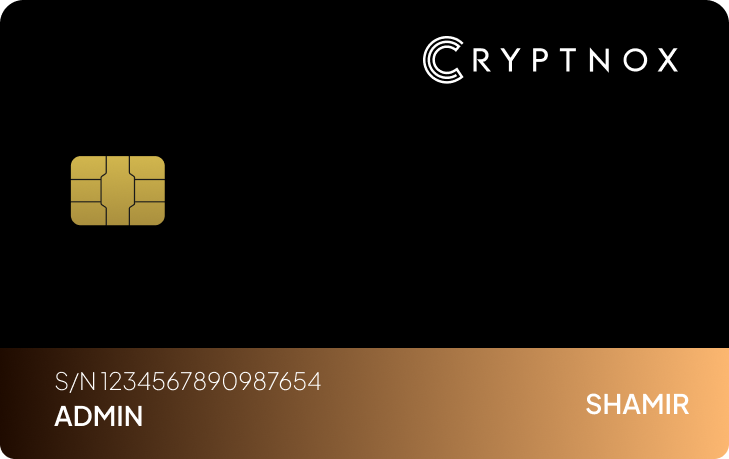

Cards
The system uses three types of Cryptnox smart card, distinguished by a colour-coded band and a printed role. All are standard ID-1 cards (85.6 × 54 mm) with a gold contact chip, a unique serial number (S/N) printed on the front, and the CRYPTNOX / SHAMIR branding.
Note
Contact only. The Shamir applets reject contactless/NFC — always use a contact reader and insert the card.
The three card types
Orchestrator (blue)


Fig. 3 Orchestrator card — performs all cryptography.
Generates the seed, splits it via Shamir, exports the encrypted shares, and reconstructs the seed during recovery. Holds no share at rest; it is reset and reused between operations. One per set. See Concepts.
On the card: only the S/N and branding are factory-set. The back is a printed form — at the ceremony, write the Bundle name and an administrator code + date in the Notes area.
Storage (teal)


Fig. 4 Storage card — holds one encrypted share.
Securely stores exactly one encrypted Shamir share, protected by a 4-character PIN. Two to twelve per set. These are the cards you distribute to custodians and store in safes.
On the card: only the S/N and branding are factory-set. The back is a
printed form you fill in at the ceremony: the Bundle name, this card’s
share number (e.g. #3), and a custodian code + Ceremony date in
the Notes area. Do not write the total or the threshold on the card —
record the full k-of-n in your custody log only, so a single lost card
does not reveal the scheme.
Admin (gold)


Fig. 5 Admin card — resets the PIN of a storage card.
Administrative recovery card: it resets the PIN of a storage card — for example when a custodian forgets their PIN or leaves the organisation. Keep it under strict control (it governs access recovery to the storage cards).
Important
The Admin card is itself PIN-protected (its own PIN, separate from the
storage PINs; default 0000, change it at provisioning). It will not sign a
reset until that PIN is verified, so the card alone is useless — an attacker
needs both the card and its PIN (two-factor). The PIN allows 10 attempts;
after that the card locks permanently (nothing can reset the Admin card — the
fallback is the k-of-n recovery quorum). Store the Admin card and its PIN
separately, and never together with the storage cards.
On the card: only the S/N and branding are factory-set; write the Bundle name in the Notes area and keep the card with the administrator.
Card markings
From the factory each card carries only a fixed S/N and the branding. At the ceremony you write, in the printed fields on the back, the Bundle name and — on storage cards — this card’s share number (e.g. #3), plus a short, non-identifying custody code and the ceremony date in the Notes area.
Keep the total and threshold off the cards. Record the full k-of-n
only in your custody log: a single lost or stolen card should not reveal how
many cards exist or how many are needed. The card cannot report its share number
electronically, so recovery relies on the number you write — write it carefully.
See Card order (share numbers) and Choosing Parameters.
Warning
Write codes only in the Notes area — never a full name or a handwritten signature. Both identify a person tied to the secret and invite coercion. The code → name mapping and the holder’s signed acknowledgement of receipt live only in the secured custody log (see Card order (share numbers)).
Storage card PIN — security levels
When provisioning storage cards, the administrator chooses a PIN policy. Pick the level that matches your custody and recovery requirements.
Level |
Policy |
Implication |
|---|---|---|
A |
Default PIN |
Simplest, lowest security — anyone holding the card can read its share. Use only for testing or very low-risk setups. |
B |
PIN changed (per card) |
The share is protected by a secret PIN. If the PIN is lost, the card (and its share) is unrecoverable — you must rely on the k-of-n quorum from the other cards. |
C |
PIN changed + Admin card |
The share is PIN-protected and a forgotten/locked PIN can be reset with the Admin card — recommended for organisations (resilient to personnel changes and forgotten PINs). |
Tip
For an institutional deployment, choose Level C: per-card PINs for security, plus an Admin card so a forgotten PIN never forces you to fall back on the quorum. Store the Admin card separately, under its own control.
See also
Custody Governance & Checklists — the operational lifecycle and checklists.
Security Model — what a stolen card reveals, PINs, audit.
The Ceremony — provisioning the cards into a set.